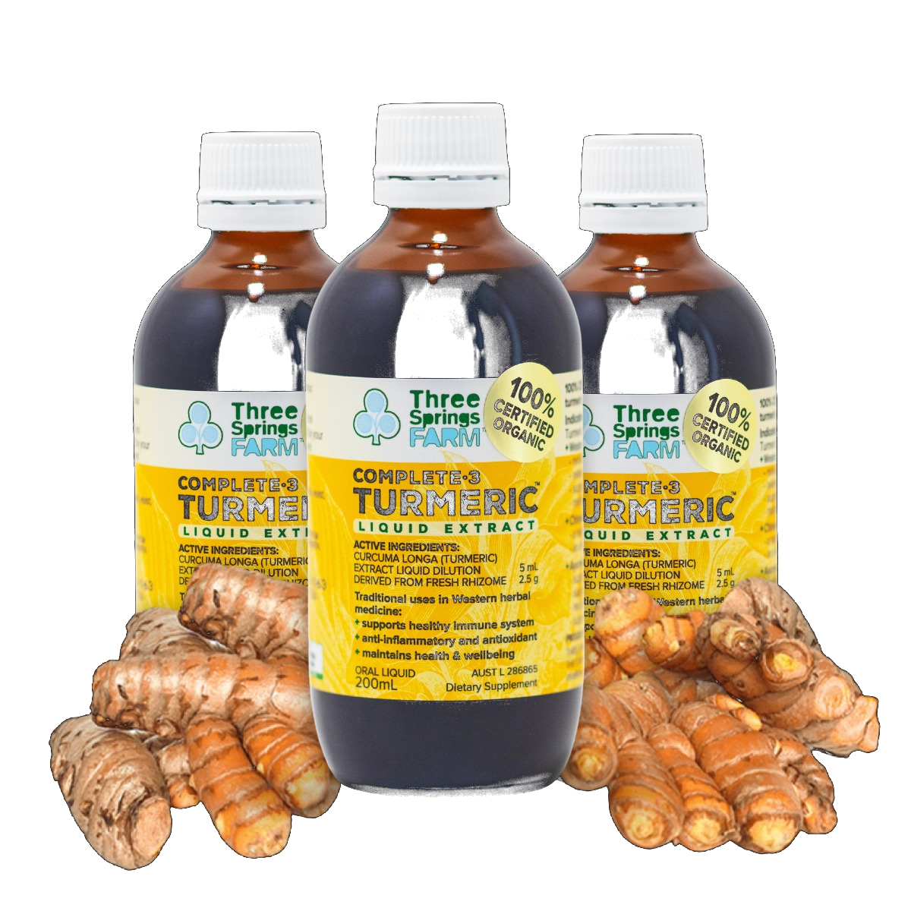
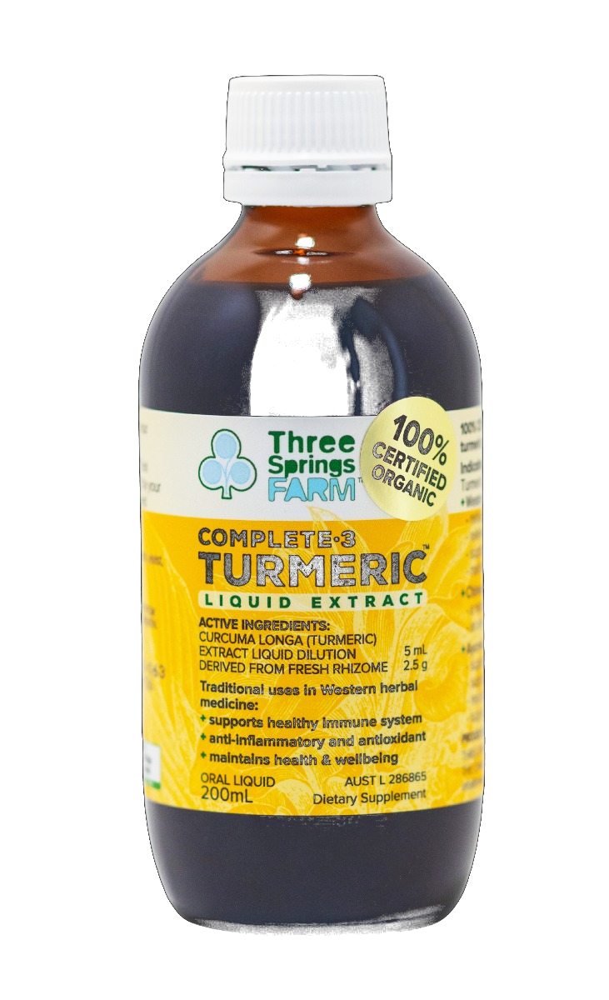

Complete 3 Turmeric™ Liquid Extract
A concentrate of certified organic turmeric with no synthetic or artificial additives. As a liquid, it is absorbed more rapidly than capsules or tablets.
Simply blend 5 ml into water, milk or coffee for an appetising daily turmeric drink.

Buy more, save more — save up to 25%
Unlike many other turmeric extracts, ours is made from fresh certified organic turmeric grown on our farm from premium rootstock selected after each harvest. It is a full spectrum extract with the whole root's actives as found in nature — nothing is stripped out, and we never use dried powder or synthetic ingredients.
Full-spectrum liquid extraction means no piperine additive is needed.
Grown and extracted on our ACO 1330 certified farm in the Northern Rivers.
Liquid extracts are absorbed more rapidly than capsules or tablets.
Turmeric has been used for centuries in Western, Chinese and Ayurvedic herbal medicine, and remains one of the most researched medicinal plants in the world. Complete 3 Turmeric™ Liquid Extract preserves curcumin and all of the whole root's actives in their natural proportions, in a liquid form that is absorbed more rapidly than capsules or tablets.
Turmeric is traditionally used in Western herbal medicine and Chinese medicine as an anti-inflammatory, helping to relieve mild joint aches, pain and stiffness.
Traditionally used as an antioxidant, turmeric may enhance the body's antioxidant potential and reduce free radical damage to body cells caused by ageing, lifestyle and environmental factors.
In Western herbal medicine, turmeric is traditionally used as a digestive bitter and liver protectant, helping to maintain gastrointestinal health and relieve mild digestive disorders.
Across Western, Chinese and Ayurvedic traditions, turmeric is used as a restorative tonic to support the immune system and maintain general health, vitality and wellbeing.
Turmeric is traditionally used in Western herbal medicine and Chinese medicine as an anti-inflammatory, helping to relieve mild joint aches, pain and stiffness.
Traditionally used as an antioxidant, turmeric may enhance the body's antioxidant potential and reduce free radical damage to body cells caused by ageing, lifestyle and environmental factors.
In Western herbal medicine, turmeric is traditionally used as a digestive bitter and liver protectant, helping to maintain gastrointestinal health and relieve mild digestive disorders.
Across Western, Chinese and Ayurvedic traditions, turmeric is used as a restorative tonic to support the immune system and maintain general health, vitality and wellbeing.
Traditionally used in Western herbal medicine and Chinese medicine as an anti-inflammatory, helping to relieve mild joint aches, pain and stiffness.
Turmeric may enhance the body's antioxidant potential and reduce free radical damage caused by ageing, lifestyle and environmental factors.
Traditionally used as a digestive bitter and liver protectant, helping to maintain gastrointestinal health and relieve mild digestive disorders.
Used across Western, Chinese and Ayurvedic traditions as a restorative tonic to support the immune system and maintain general health, vitality and wellbeing.
Trusted for centuries in Western Herbal Medicine, Traditional Chinese Medicine and Ayurveda. Grown and extracted on our certified organic farm (ACO 1330).
AUST L 286865Add turmeric to your daily routine the easy way: just 5 ml in water, milk or coffee.
Add turmeric to your daily routine the easy way:
just 5 ml in water, milk or coffee.

Buy online or from one of our 65+ stockist partners throughout Australia. We also offer a discounted monthly subscription for the ongoing benefits of Complete 3 Turmeric™ Liquid Extract.
Always read the label. Follow the directions for use. If symptoms persist, talk to your healthcare professional. Contains ethanol. AUST L 286865.
"I was diagnosed with Inflammatory Arthritis two and a half years ago. Not wanting to take conventional medication, I began exploring alternative options. Turmeric appeared to be high on the list, so I tried a course of Turmeric Tablets which had some effect but nothing of great significance. I was fortunate enough to hear of Three Springs Farm doing trials on Turmeric Liquid on their organic farm. I started a trial on the product and that's where my life has changed. I have been using Complete 3 Turmeric Liquid Extract for almost a year now, taking 5–10 mls each morning with almond milk. The result in pain relief has been incredible, enabling me to resume exercising and to do all of the things that I once did prior to diagnosis. I can't thank the owners of Three Springs Farm enough."
Elaine, Bronte
"Constant lifting, bending and kneeling was taking its toll on my joints and energy. A friend recommended Complete 3 Turmeric extract instead of over the counter pain killers that had only given me limited relief. The stiffness and aches have gone away and I feel a renewed sense of wellbeing."
Kathryn, Lismore
"For the past two years I've had to limit physical tasks and take prescription anti-inflammatories because of problems in my shoulders and lower back. Since taking Complete 3 Turmeric I'm again enjoying work in the great outdoors free from pain and unpleasant side effects."
Andrew, Terania Creek
"I take turmeric for joint pain and stiffness — I consider it a natural anti-inflammatory, so now I'm taking less than 5ml morning and night. I love your product and I hope your business is growing well."
Sally, Victoria
Three Springs Farm is a certified horticultural operation in accordance with the Australian Certified Organic Standard — ACO 1330. All produce is grown without harmful chemicals, synthetic pesticides, herbicides, antibiotics, or genetic modification. Inspections and audits are conducted regularly.
Three Springs Farm acknowledges the traditional custodians of the Bundjalung Nation. We recognise their continuing connection to land, sea and waters. We pay our respects to elders past, present and future.
Read More About Three Springs Farm